노트
어휘: 전기 에너지 생산 및 배전과 관련된 다음 어휘를 기록하세요. 학습 활동을 완료하면서 각 어휘의 정의와 핵심 용어를 채워 넣으세요.
- 유도(induction)
- 전자기(electromagnetic)
- 변압기(transformer)
- 발전기(generator)
- 전동기(motor)
- 1차 회로(primary circuit)
- 2차 회로(secondary circuit)
- 코일(coil)
- 슬립 링(slip rings)
- 정류자(commutator)
- 강압 변압기(step-down transformer)
- 승압 변압기(step-up transformer)
- 렌츠의 법칙(Lenz's law)
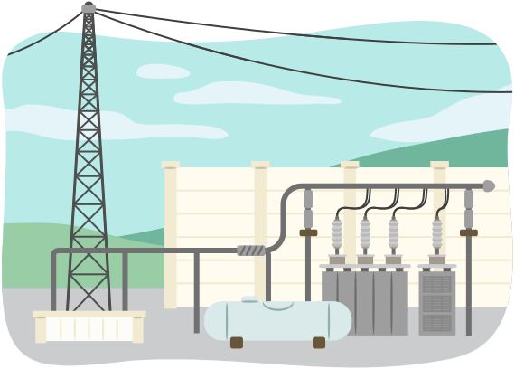
대규모 전기 배전
이 학습 활동에서는 전기 생산의 원리와 전기 배전망에 대해 배우게 됩니다.
전기를 어떻게 얻는지 생각해 본 적이 있나요? 전기 기기를 콘센트에 꽂을 때, 전기가 정확히 어떻게 전달되는지 알고 있나요? 현재로서는 전혀 모를 수도 있고, 이전 과학 수업에서 일부 세부 사항을 알고 있을 수도 있습니다. 이 질문에 답하기 위해 떠오르는 아이디어를 기록해 보세요. 학습 활동이 끝날 때 이 질문을 다시 살펴볼 것입니다.

생각해보기
가정, 학교 또는 직장의 전기에 대해 생각하면서 이 학습 활동을 시작해 봅시다.
1. 북미에서 콘센트의 출력 전압은 얼마입니까?
대부분의 콘센트는 120 V이고, 전기 스토브, 전기 자동차, 의류 건조기용 콘센트는 240 V입니다.
2. 일반적인 스마트폰이나 휴대전화 충전에 필요한 전압은 얼마입니까?
5 V이며, 이는 컴퓨터의 USB 포트와 휴대전화 충전 어댑터의 일반적인 출력 전압입니다.
전기 어댑터가 어떤 역할을 하는지 궁금했던 적이 있나요? 어떤 전기 기기에나 사용할 수 있을까요? 전자기의 응용에 관한 이 학습 활동에서 이러한 질문에 대한 답을 찾을 수 있습니다.
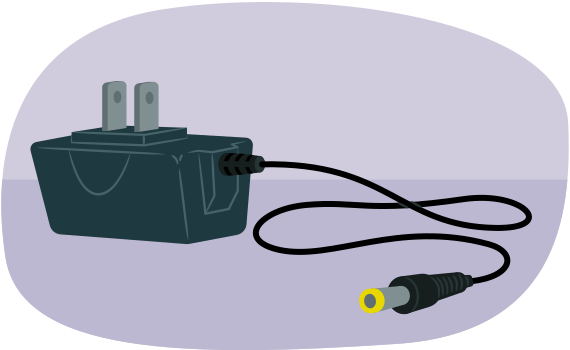
전자기 유도(electromagnetic induction)
오로라(aurora borealis)에 대해 들어본 적이 있을 것입니다.
오로라에 대한 가르침은 캐나다의 원주민(First Nations), 이누이트(Inuit), 메티스(Métis) 민족에게 중요하며, 전설과 이야기를 통해 세대에서 세대로 전해져 왔습니다. 일부 원주민 공동체는 오로라를 조상의 영혼이라고 믿었습니다. 원하는 검색 엔진을 사용하여 다양한 공동체와 그들의 오로라에 대한 가르침을 조사해 보세요.
1989년, 태양에서 강렬한 전자기 활동이 있었던 시기에 오로라가 텍사스만큼 남쪽에서도 관측되었습니다. 이 강렬한 전자기 활동의 또 다른 결과로 퀘벡에서 600만 명이 9시간 동안 전력 없이 지내야 했습니다. 태양이 어떻게 퀘벡 전력망을 교란시킬 수 있었는지 이해하려면, 자기장이 어떻게 전류(electric current)를 생성할 수 있는지 배워야 합니다.
Faraday의 철 고리 실험
많은 과학자들이 자기장으로 전류를 만들려고 시도했지만 성공하지 못했습니다. 영국의 물리학자 Michael Faraday는 여러 번의 시도 끝에 해결책을 찾았습니다. 그는 자기장을 사용하여 전류를 생성하는 방법을 알아낼 수 있었습니다.
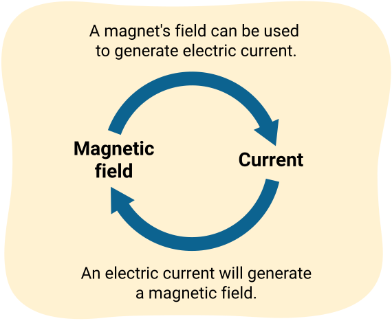
옆의 그림에서 두 개의 별도 회로가 철심에 코일을 감고 있습니다. 1차 회로(primary circuit)는 1차 코일에 전류를 공급하는 전원에 연결되어 있습니다. 2차 회로(secondary circuit)는 전원이 없고 2차 코일만 포함하고 있습니다.
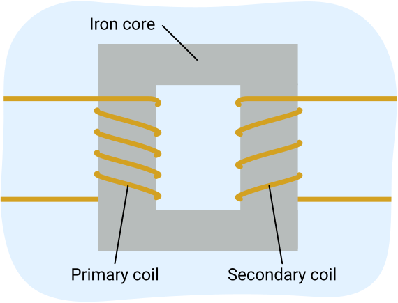
탐구해보기!
다음 영상은 Faraday가 사용한 원래 장치를 보여주고 발견된 관찰 결과를 설명합니다.
Faraday가 관찰한 것은 다음과 같습니다:
- 일정한 전류가 1차 코일에 흐르면 일정한 자기장이 생기고, 2차 코일에는 전류가 흐르지 않습니다.
- 변화하는 전류(켜거나 끌 때)가 1차 코일에 흐르면 변화하는 자기장이 생기고, 변화하는 자기장이 2차 코일에 전류를 생성합니다.
이것은 매우 놀라운 일입니다! 2차 코일에는 전원이 없습니다! 그러나 변화하는 자기장이 2차 코일 근처에 있으면 전류가 흐르게 됩니다.
Faraday는 이 모든 관찰을 전자기 유도 법칙(law of electromagnetic induction)으로 종합했습니다.
전자기 유도 법칙
도체 영역의 자기장이 변할 때마다 도체에 전류가 유도됩니다.
전자기 유도 법칙
도체 영역의 자기장이 변할 때마다 도체에 전류가 유도됩니다.
전자기 유도 법칙을 사용하여 다음 그림에 대한 질문에 답해 보세요.
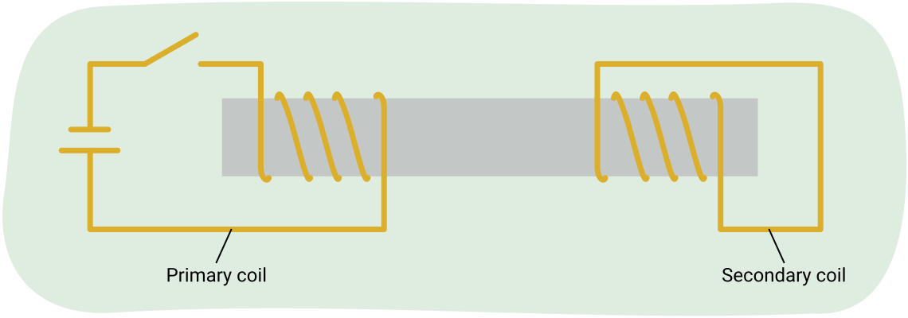
이 그림에서 배터리가 1차 코일에 전류를 생성하는 데 사용됩니다. 2차 코일에는 전원이 연결되어 있지 않습니다.
생각해보기
각 질문에 대한 답을 생각한 후, 질문을 선택하여 풀이를 확인하세요.
스위치를 닫으면 1차 회로에 전류가 흐르기 시작합니다. 전류가 흐르기 시작하면 자기장이 생성됩니다. 자기장이 0에서 최대 세기로 증가하는 동안 자기장이 변하므로, 변화하는 자기장이 2차 코일에 전류를 생성합니다.
스위치가 닫힌 상태로 유지되면, 1차 회로에 흐르는 전류가 일정한 자기장을 만듭니다. 자기장이 일정하기 때문에 2차 코일에 전류를 생성하지 않습니다.
스위치를 열면 1차 회로에 전류가 흐르지 않게 됩니다. 전류가 멈추면 자기장이 다시 0으로 감소합니다. 변화하는 자기장이 2차 코일에 전류를 생성합니다.
스위치가 열린 상태로 유지되면 1차 회로에 전류가 흐르지 않습니다. 자기장이 없으므로 2차 코일에 전류가 흐르지 않습니다.
전자기 유도
변화하는 자기장이 유도 전류를 생성할 수 있다는 것을 증명하는 또 다른 방법은 막대자석을 코일 안으로 밀어 넣거나 밖으로 빼내는 것입니다. 막대자석의 자기장은 극 근처에서 가장 강합니다. 극이 코일에 접근하면 자기장의 세기가 증가하고, 멀어지면 세기가 감소합니다. 어느 경우든 자기장이 변하고 코일에 전류가 유도됩니다. 자석을 앞뒤로, 코일 안팎으로 움직이면 교류(alternating current)를 생성할 수 있습니다.
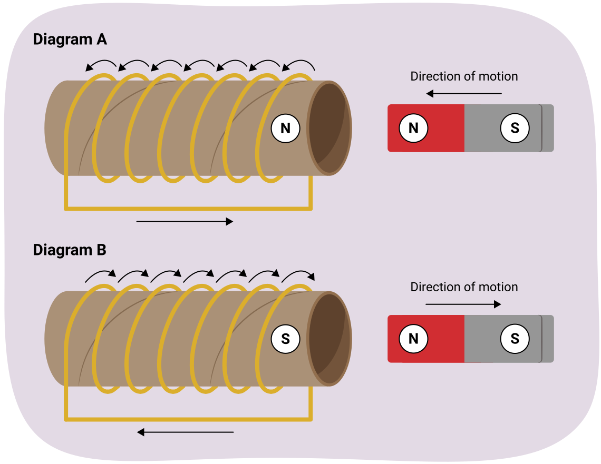
앞의 그림에서 볼 수 있듯이, 자석의 운동 방향을 반대로 하면 전류의 방향도 반대가 됩니다.
전류의 방향을 어떻게 예측할 수 있을까요? Heinrich Lenz라는 과학자가 에너지 보존을 생각하여 전류 방향을 예측하는 방법을 발견했습니다.
Lenz는 자신의 아이디어를 다음 법칙으로 요약했습니다.
렌츠의 법칙(Lenz's law)
렌츠의 법칙은 변화하는 자기장에 의해 코일에 전류가 유도될 때, 유도된 전류는 그것을 생성한 변화에 반대하는 자기장을 만들어야 한다고 말합니다.
다음 두 가지 예시는 렌츠의 법칙이 어떻게 작용하는지 설명합니다.
예시 1: 렌츠의 법칙
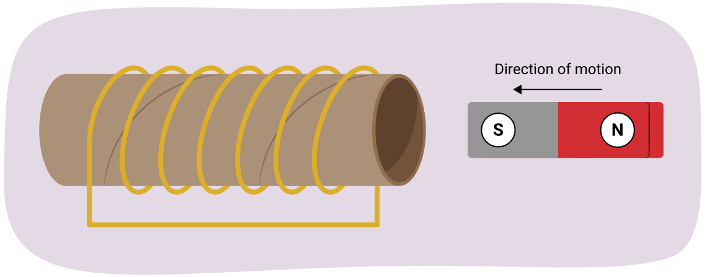
이 예시에서 움직이는 막대자석이 움직이는 자기장을 만듭니다. 유도 전류의 방향을 결정하려면, 코일의 자기장이 움직이는 자기장에 반대하려 한다는 것을 기억하세요. 이는 코일이 다음 그림과 같이 자기장을 설정한다는 것을 의미합니다.
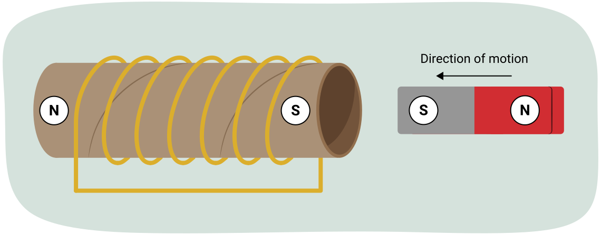
코일 오른쪽에 설정된 S극은 코일 안으로 들어가려는 자석의 S극에 반대합니다.
이제 코일의 오른손 법칙을 사용하여 코일 왼쪽에 N극이 있고 오른쪽에 S극이 있을 때 전류가 어느 방향으로 흐르는지 결정하세요. 엄지손가락이 N극을 가리키고 손가락이 감기는 방향이 전류의 방향입니다.
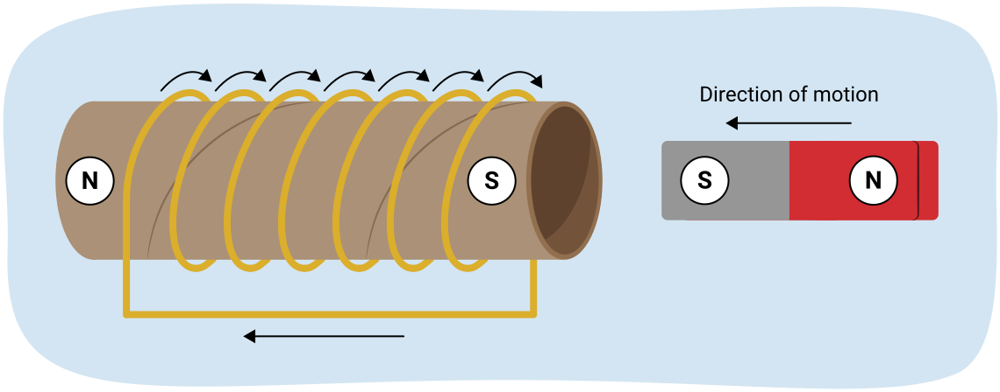
오른손 법칙을 사용하면, 전류가 앞의 그림에서 화살표 방향으로 흐른다는 것을 알 수 있습니다.
예시 2: 렌츠의 법칙
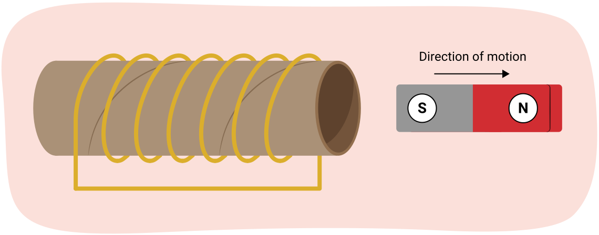
이 예시에서 움직이는 막대자석이 움직이는 자기장을 만듭니다. 유도 전류의 방향을 결정하려면, 코일의 자기장이 움직이는 자기장에 반대하려 한다는 것을 기억하세요. 이는 코일이 다음 그림과 같이 자기장을 설정한다는 것을 의미합니다.
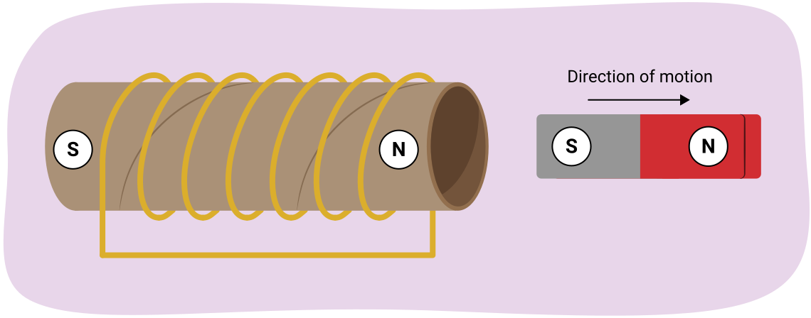
코일 오른쪽에 설정된 자석의 N극은 코일에서 멀어지려는 자석의 S극을 끌어당겨 반대합니다.
이제 코일의 오른손 법칙을 사용하여 코일 왼쪽에 S극이 있고 오른쪽에 N극이 있을 때 전류가 어느 방향으로 흐르는지 결정하세요. 엄지손가락이 N극을 가리키고 손가락이 감기는 방향이 전류의 방향입니다.
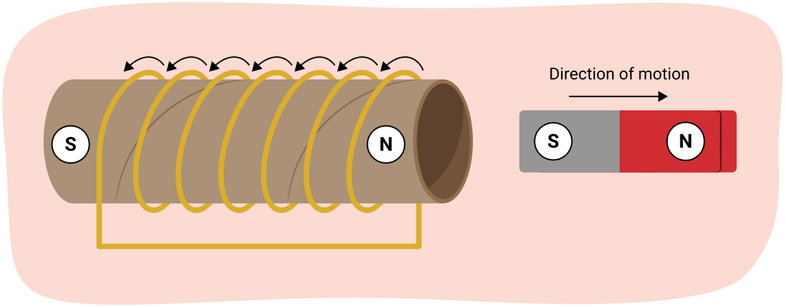
오른손 법칙을 사용하면, 전류가 앞의 그림에서 화살표 방향으로 흐른다는 것을 알 수 있습니다.
노트
노트에 다음 그림을 그리세요.
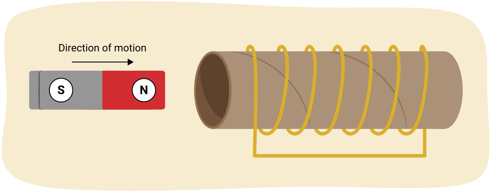
렌츠의 법칙과 코일의 오른손 법칙을 사용하여 코일 주변의 N극과 S극 위치를 표시하고, 화살표로 전류의 방향을 나타내세요.
움직이는 자석은 코일 왼쪽에 N극을 만들 것입니다. 코일의 자기장이 자석의 움직임을 막으려 하므로 자석을 밀어내려 하기 때문입니다. 코일의 오른손 법칙을 사용하면, 엄지손가락이 왼쪽 N극을 가리키므로 손가락은 위쪽으로 감깁니다. 따라서 전류가 다음 그림에서 화살표 방향으로 흐른다는 것을 알 수 있습니다.
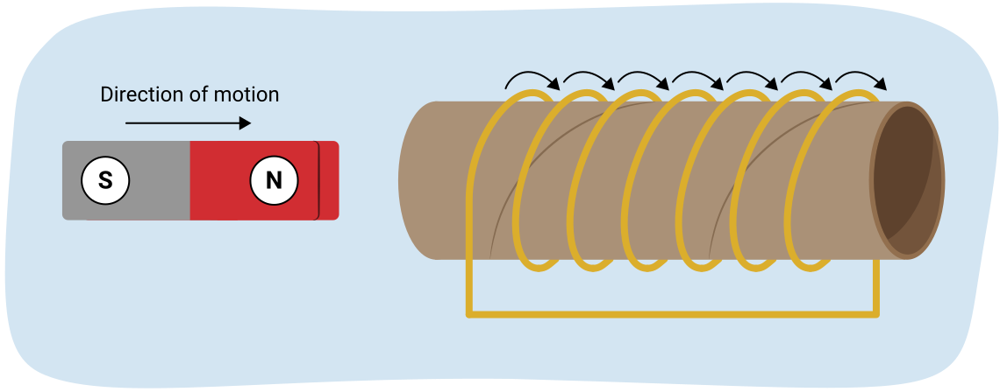
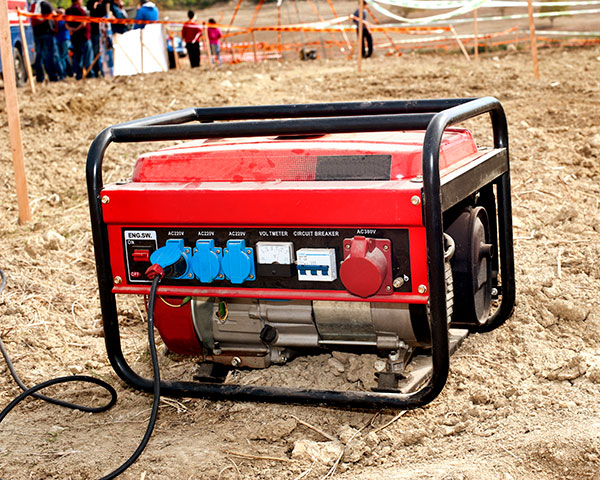
전기 발전기(electric generator)
전동기(electric motor)와 발전기는 반대입니다. 이전 학습 활동에서 전동기를 공부할 때, 전동기가 전류 형태의 전기 에너지를 사용하고 자기력으로 기계적 에너지(회전하는 코일)를 만든다는 것을 배웠습니다. 발전기는 기계적 에너지(움직이는 코일)를 사용하고, 자기력으로 다음 그림과 같이 전기 에너지(움직이는 전하)를 만듭니다.
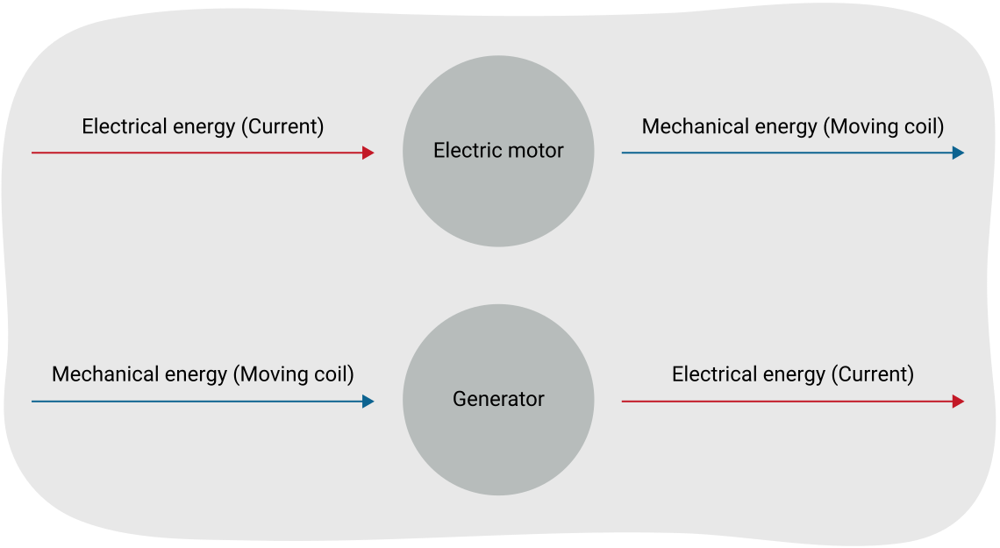
전기 발전기는 지금까지 발명된 가장 중요한 장치라고 할 수 있습니다. 이 기계는 거의 모든 다른 전기 기기를 작동시키는 전기를 생산하는 데 사용됩니다. 발전기 없이는 전기를 저렴하게 생산할 방법이 없을 것입니다; 현재 일반 가정에서 사용하는 규모의 전기를 감당할 수 있는 것은 매우 비싼 대규모 태양광 배열과 거대한 배터리를 연결할 수 있는 사람들뿐일 것입니다. 일반적인 발전기는 다음 그림에 나와 있습니다. 다음 발전기 그림이 전동기와 비슷하게 보이지만, 몇 가지 변화가 있다는 것을 주목하세요.
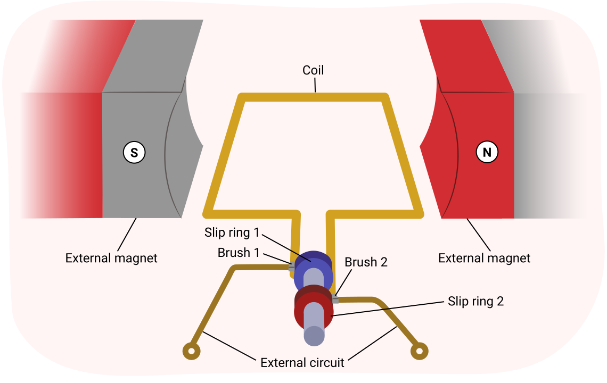
용어를 선택하여 발전기 각 부분의 기능을 탐구해 보세요.
발전기는 어떻게 작동하나요?
발전기는 전자기 유도 법칙에 의해 코일에서 전기를 만듭니다. 전자기 유도 법칙은 변화하는 자기장이 도선에 전류를 만든다고 말합니다.
코일이 회전하면 외부 자기장을 통과하면서 자기장의 변화를 느낍니다. 코일이 변화하는 자기장을 느끼면 코일에 전류가 생성됩니다.
생각해보기
큰 질문은 무엇이 코일을 회전시키느냐는 것입니다. 코일을 회전시키는 외부 힘이 있어야 합니다.
다음 이미지들은 코일을 회전시키는 힘을 제공하는 다양한 방법을 보여줍니다.
코일이 회전하면 코일에 전기가 생성됩니다. 렌츠의 법칙에 따르면, 이 유도 전류는 항상 회전 작용에 저항해야 하며, 이는 코일의 전류가 반 회전마다 방향이 바뀐다는 것을 의미합니다. 이 유형의 발전기가 생산하는 전류는 교류(AC, alternating current)입니다. 전류는 코일의 한 회전 주기마다 한 번씩 앞뒤로 교대합니다. 이것은 다음 그림에 나타나 있습니다.
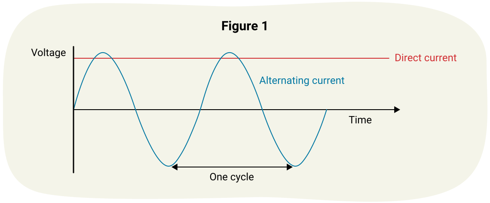
이 그림은 교류(AC)와 직류(DC) 전류의 차이를 보여줍니다. 직류는 항상 같은 방향으로 흐르는 반면, 교류는 코일의 각 회전마다 변합니다.
코일을 회전시키는 데 더 많은 에너지가 가해질수록 코일이 더 빨리 회전하고 더 큰 전류가 생성됩니다. 이것은 다음 그림에 나타나 있습니다. 파란색 실선은 빨간색 실선보다 세 배 빠르게 회전하는 코일을 나타냅니다. 그 결과, 파란색 코일에는 훨씬 더 큰 전류가 유도됩니다. + 및 - 기호는 전류가 반 회전 동안 한 방향으로 흐르다가 나머지 반 회전에서 방향이 바뀐다는 것을 나타냅니다. 이것은 교류(AC)의 또 다른 예시입니다.
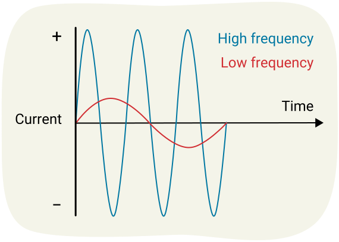
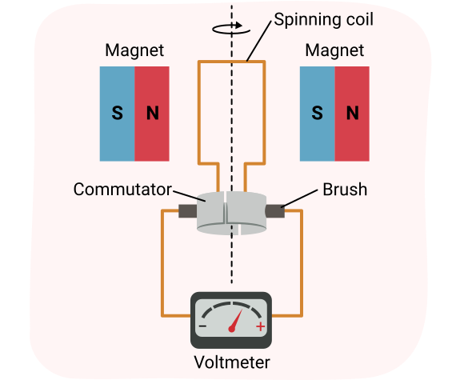
직류(DC) 발전기
슬립 링을 정류자(commutator)로 교체하면 직류 발전기를 만들 수 있습니다. 이제 외부 회로의 전류 방향이 바뀌지 않습니다. 이는 회전하는 코일에서 전류가 방향을 바꿀 때 브러시가 옆의 그림과 같이 정류자의 다른 쪽 절반과 접촉하기 때문입니다.
이것은 코일 내 전류 방향 변화를 상쇄하고 외부 회로에서 전류가 같은 방향으로 계속 흐르게 합니다. 나중에 교류 발전기가 전력 배전망에서 선호되는 이유를 배우게 될 것입니다.
직접 해보기!
다음 전자기 유도에 관한 문제를 풀어 이해도를 확인하세요.
더 알아보기
원하는 검색 엔진을 사용하여 "How power gets to your home and crash course physics #35" 영상을 검색하세요.
영상을 탐구하여 전기가 어떻게 배전되는지 알아보세요.
변압기와 전기 배전
송전선을 따라 전달되는 교류(AC) 전기는 매우 높은 전압을 가지고 있습니다. 가정의 콘센트에서 나오는 전기는 120 V에 불과합니다(전기 오븐, 의류 건조기, 전기 자동차 플러그의 경우 240 V). 변압기는 송전선의 전압을 가정에서 필요한 전압으로 낮추는 데 사용됩니다.
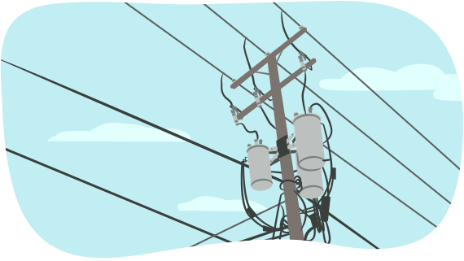
변압기
다음 변압기 그림을 살펴보세요.
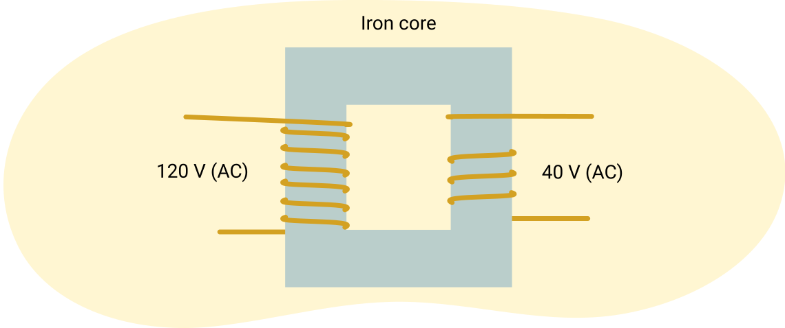
이 유형의 변압기는 1차 코일의 교류 전압을 낮추기 때문에 강압 변압기라고 합니다. 이 예시에서 변압기는 120 V에서 40 V로 강압했으며, 둘 다 교류입니다.
1차 코일을 단단한 철심에 감은 다음, 다른 쪽에 더 적은 루프(loop)로 2차 코일을 감으면, 1차 교류 전류에서 나오는 변화하는 자기장이 2차 코일에 전류를 유도합니다.
변압기는 교류 전류에서만 작동합니다. 1차 전류가 직류이면 철심에 생성되는 자기장이 변하지 않습니다. 자기장이 변하지 않으면 2차 코일에 전류가 생성되지 않습니다.
변압기의 전압 변화는 각 코일의 감은 수 비율에서 나옵니다.
승압 변압기와 강압 변압기
강압 변압기: 1차 코일이 2차 코일보다 더 많은 루프를 가지고 있습니다. 다음 그림과 같이 전압이 1차 코일에서 2차 코일로 갈 때 감소합니다. 이 변압기는 1차 코일의 감은 수가 세 배이므로 강압 변압기이며 전압이 3으로 나누어집니다.
승압 변압기: 1차 코일이 2차 코일보다 더 적은 루프를 가지고 있습니다. 전압이 1차 코일에서 2차 코일로 갈 때 증가합니다.
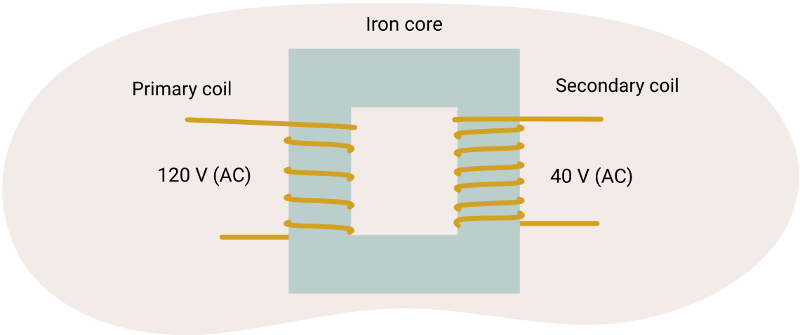
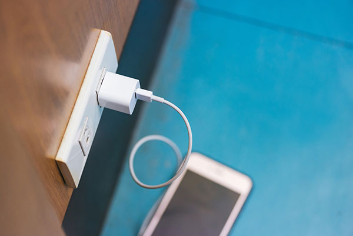
승압 변압기는 전자 기기를 보호하는 데도 사용됩니다. 노트북이나 다른 충전기의 코드를 살펴보세요. 코드에 상자 모양의 부분이 있을 것입니다. 그 상자 안에는 콘센트에서 기기가 받는 전류와 전압을 조절할 수 있는 소형 변압기가 들어 있습니다. 변압기에 들어가고 나오는 전압과 전류의 양은 상자에 표시되어 있습니다.
변압기 문제 풀기
코일의 감은 수(N)와 코일의 전압(V) 및 코일의 전류(I)를 연결하는 방정식이 있습니다.
공식
변압기:
여기서:
아래 첨자 "P"는 1차 코일을 나타내고, 아래 첨자 "S"는 2차 코일을 나타내며, V는 전압, N은 루프의 수, 그리고 I는 전류입니다.
이 방정식의 어떤 두 부분이든 선택하여 사용할 수 있습니다. 예를 들어, 다음을 사용할 수 있습니다:
예시: 변압기
15 V 포트 라이트가 100개의 루프와 0.60 A의 전류를 가진 변압기의 2차 회로에 연결되어 있습니다. 1차 전압이 120 V일 때, 1차 코일의 감은 수와 1차 코일의 전류를 구하세요.
주어진 값:
미지수:
방정식:
풀이:
결론:
1차 코일의 전류는 0.075 A이고, 1차 코일의 감은 수는 800개입니다.
전기 에너지의 배전
원자력, 화석 연료 또는 수력 발전소의 일반적인 발전기는 20,000 V의 전위차로 전기를 생산합니다.
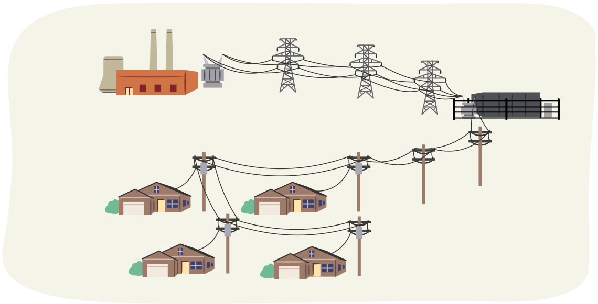
이러한 발전소는 냉각 목적(원자력이나 화석 연료의 경우)이나 직접적인 에너지원(수력 발전의 경우)으로 대량의 물이 필요한 경우가 많습니다. 어느 경우든 발전소는 전기 소비자로부터 멀리 떨어진 곳에 위치하는 경우가 많아 이 전기 에너지를 운반하기 위해 긴 송전선이 필요합니다.
이 송전선은 매우 낮지만 완전히 무시할 수 없는 저항을 가지고 있습니다. 따라서 생산된 에너지 중 일부는 도선의 내부 저항으로 인해 이 선에서 손실됩니다. 이 에너지는 낭비되고 선을 약간 가열시킵니다.
생각해보기
사람들은 가끔 왜 콘센트에서 교류 대신 직류를 사용하지 않는지 궁금해합니다. 이제 여러분은 이 질문에 답할 수 있습니다.
발전기는 낮은 전압과 높은 전류로 전력을 생산합니다. 이 전력을 효율적으로 전송하려면 다음 그림과 같이 변압기를 사용하여 전압을 높이고 전류를 줄여야 합니다.
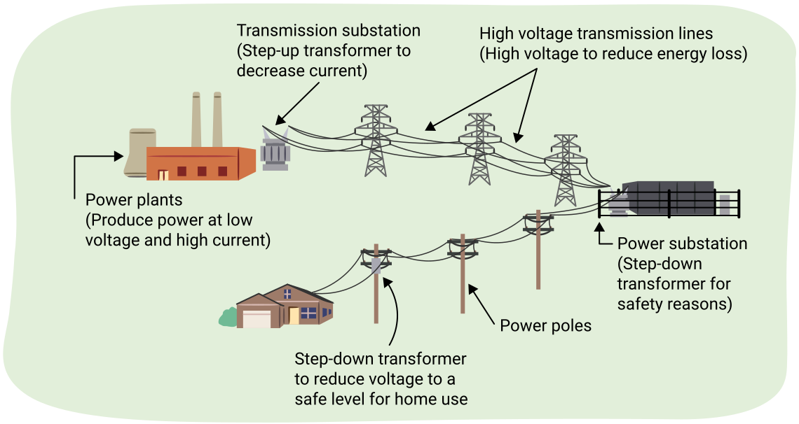
직류 전송
직류를 전송하는 기술은 존재합니다. 이 기술은 매우 전문적이며, 교류 시스템을 분리하고 전송되는 전기량을 제어하는 데 유리할 수 있습니다(예: Ontario, Quebec, New York State 간). Hydro-Québec은 직류 전송선(Baie-James 지역에서 Boston 근처의 Sandy Pond까지)과 Ontario의 배전망 운영자인 HydroOne과의 여러 직류 상호 연결을 보유하고 있습니다.
노트
방금 배운 전력 배전에 대한 내용을 사용하여 노트에서 다음 질문에 답하세요. 답안지새 창에서 열림에서 답을 확인하여 이해도를 점검할 수 있습니다.
1. 2.0 Ω의 저항을 가진 긴 송전선을 통해 1.0 × 106 W의 전력을 전송하기 위한 두 가지 선택지가 있습니다:
선택 1: V = 10,000 V
선택 2: V = 800,000 V
어느 것이 더 나은 선택입니까? 그 이유를 설명하세요.
2. 다음 그림은 전력 배전망의 간략화된 버전을 나타냅니다.
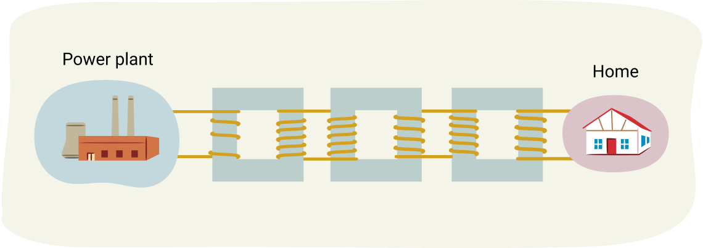
노트에 이 그림을 직접 그리세요. 그림의 각 부분이 무엇을 나타내는지 표시하고 왜 사용되는지 설명하세요.
3. 다음 각 항목이 효율적인 전력 배전망에 왜 필수적인지 자신의 말로 설명하세요:
a) 변압기
b) 교류 전류
잠시 쉬어가세요!
훌륭합니다! 위의 섹션을 완료했습니다. 다음 섹션으로 넘어가기 전에 잠시 휴식을 취하기 좋은 시간입니다.
전자기의 현대적 응용
이 섹션에서 아직 다루지 않은 전자기의 많은 응용 분야가 있습니다. 그 중 일부는 매우 중요하지만 이 과정의 범위를 벗어납니다. 나머지는 향후 물리학 과정에서 공부하게 될 것입니다. 이 섹션에서는 이러한 응용 분야 중 몇 가지를 배우고, 그것들이 사회에 미친 영향을 생각해 볼 것입니다.
자기 공명 영상(MRI, Magnetic Resonance Imaging)
자기 공명 영상(MRI)은 인체 내부 조직의 고품질 이미지를 만드는 데 사용되는 진단 기술입니다. 이 이미지는 3D 이미지를 제공하기 때문에 일반적인 X선 촬영보다 훨씬 더 많은 것을 보여줍니다. MRI는 매우 비싸고 고통스러운 침습적 수술을 피하는 데 자주 도움을 줍니다. MRI는 또한 아직 진단되지 않은 질병을 발견하여 많은 사람들의 생명을 구하는 데 도움을 줍니다.
MRI는 강력한 전자석을 사용하여 환자를 완전히 둘러싸는 매우 강한 균일한 자기장을 만듭니다.
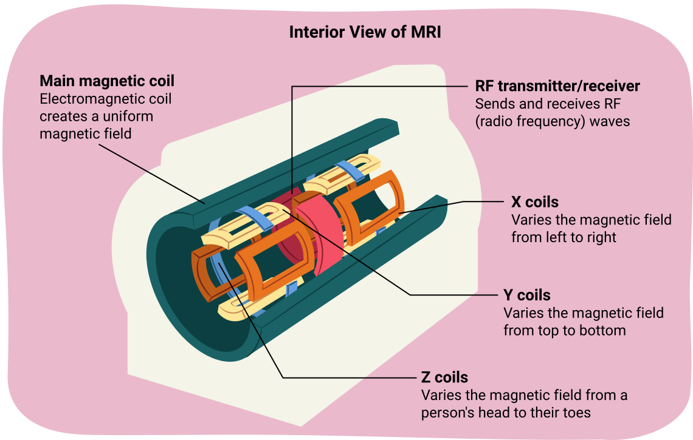
이 이미지는 MRI 기계의 부품을 보여줍니다.
MRI를 받는 환자는 몸에 있는 금속(보석이나 피어싱 등)을 모두 제거해야 합니다. MRI의 자기장이 너무 강해서 자기장에 끌릴 수 있는 것이 환자에게 있으면 위험할 수 있기 때문입니다.
MRI는 체내의 수소 원자가 측정할 수 있는 방식으로 자기장에 반응하기 때문에 작동합니다. 수소 원자는 한 번에 한 섹션씩 상세한 사진을 만드는 데 도움을 줍니다. 그런 다음 이 모든 사진이 결합되어 환자 체내의 3D 이미지가 만들어집니다.
더 알아보기
원하는 검색 엔진을 사용하여 'magnetic resonance imaging and NIH'를 검색하세요. 미국 국립보건원(National Institute of Health)의 자기 공명 영상 웹사이트를 탐색하거나 해당 사이트의 영상을 보고 MRI가 어떻게 자기장을 사용하여 체내 장기를 식별하는지 알아보세요.
종양 세포의 양성자는 정상 세포의 양성자와 다른 속도로 원래 위치로 돌아갑니다. 이는 의사가 다양한 장기에서 종양의 위치와 크기를 파악하는 데 도움이 되며, MRI 이미지로 이를 감지할 수 있습니다.
MRI 이미지가 없으면 의사는 질병의 원인을 알 수 없어 단지 조사만을 위해 환자에게 수술을 해야 할 수도 있습니다. 이것은 매우 비용이 많이 들고 많은 환자가 불필요한 수술을 받아야 할 것입니다.
회생 제동(regenerative braking)
이 섹션의 앞부분에서 전동기와 전기 발전기가 매우 유사하다는 것을 언급했습니다. 둘 사이의 주요 차이점은 전동기는 코일을 회전시키기 위해 전기 공급원이 필요한 반면, 발전기는 전기를 생산하기 위해 코일을 회전시키는 외부 힘이 필요하다는 것입니다. 이것은 배터리를 충전한 다음 바퀴를 돌리는 전동기를 작동시키는 데 사용하는 전기 자동차에서 이점이 될 수 있습니다. 자동차가 완전히 전기식이면 가솔린 엔진이 필요 없고, 하이브리드 자동차는 다음 그림과 같이 두 가지 유형의 엔진을 모두 가지고 있습니다.
회생 제동은 전동기와 발전기가 매우 유사하다는 사실을 활용하는 기술입니다. 운전자가 가속하고 싶을 때 전동기가 배터리의 에너지를 사용하여 바퀴를 돌립니다.
그러나 운전자가 브레이크를 밟으면 컴퓨터가 전동기를 전기 발전기로 전환합니다. 이제 무거운 자동차의 관성이 적극적으로 바퀴를 돌리고, 이것이 전동기의 코일을 회전시켜 발전기처럼 작동하게 합니다. 이 회전하는 바퀴가 배터리를 재충전하는 데 필요한 전기를 생산하는 에너지를 제공합니다. 운전자가 속도를 높이고 싶을 때 감속에서 얻은 에너지를 사용하여 자동차를 다시 가속할 수 있습니다.
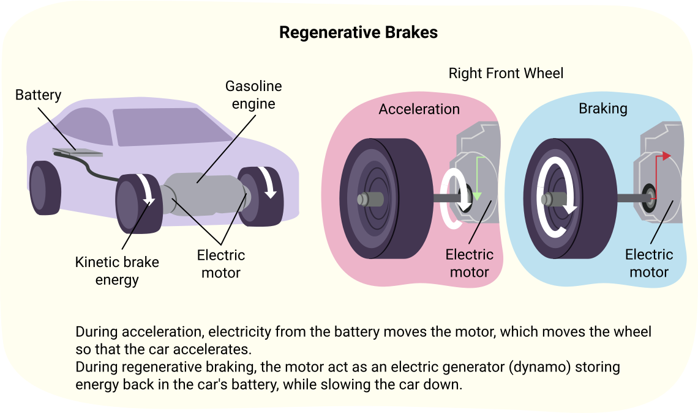
공학 설계 및 시험
앞의 이미지에서 전동기가 바퀴에 직접 부착되어 있습니다. 이로 인해 전동기는 매우 가혹한 환경에 놓이게 됩니다. 엄청난 진동, 먼지, 진흙, 얼음, 열 및 기타 조건으로 인해 전기 자동차를 제공하는 대부분의 회사가 일반적인 내연기관처럼 전동기를 엔진룸으로 옮기고, 전동기의 에너지를 바퀴에 전달하기 위해 무겁고 에너지를 소비하며 복잡하고 비용이 많이 드는 추가 부품을 사용하게 되었습니다. 다음은 더 일반적인 전기 자동차 구성의 이미지입니다:
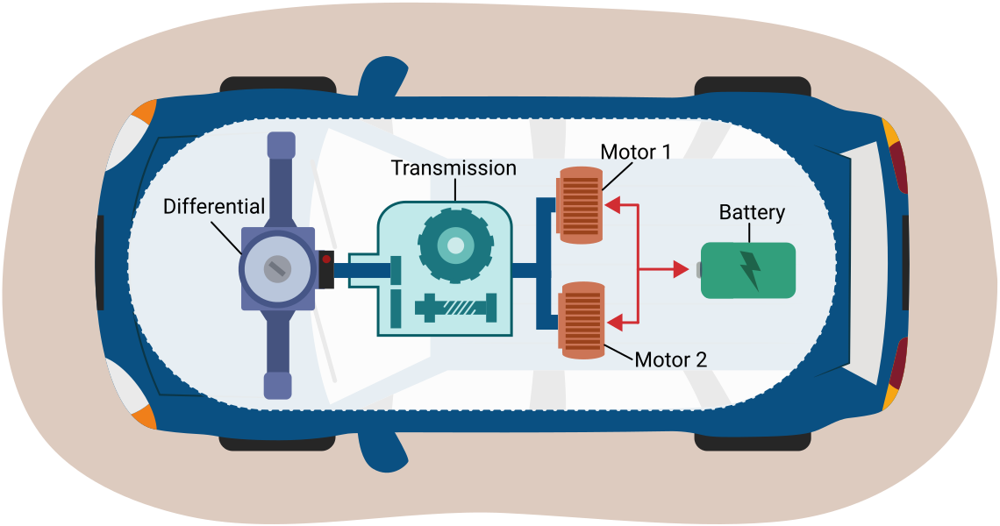
바퀴 허브에 배치되는 가혹한 환경을 견딜 수 있는 전동기를 설계하기 위한 경쟁이 진행 중입니다.

전기 안전
캐나다 및 온타리오 전기 규정과 관련 제품 표준이 전기 배전 시스템에 사용되는 장비를 규제하는 데 사용됩니다.
회로에서 전력(electrical power)은 로 표현할 수 있다는 것을 기억하세요. 여기서 는 전류이고 은 저항입니다. 이것은 도체에서 발생하는 열 에너지의 와트 수를 결정하는 데 사용되는 공식입니다.
생각해보기
집의 석고보드와 다른 벽 뒤에 설치된 전선에 대해 생각해 보세요. 전선을 설치한 사람이 너무 작은 도체 크기를 선택했다면 어떻게 될까요?
이 표준은 전기 공기(공간) 히터를 제조하는 회사에서 일하는 엔지니어들이 만들었습니다. 그들은 수시로 발생하는 안전 문제를 검토하고 향후 설계를 위한 개선 조치를 시행합니다. 캐나다 표준(설계 및 시험 규칙)이 미국 및 나머지 세계(IEC 표준)의 표준과 유사하도록 노력합니다. 이를 통해 캐나다에서 설계된 제품을 전 세계에 판매할 수 있고, 그 반대도 가능합니다.
예시
중고 거래 장터나 온라인 중고품 시장에서 중고 헤어드라이어를 구입했다고 가정해 봅시다. 중고 헤어드라이어는 먼지가 막혀 있고 약간 긁혀 있으며 - 오래 사용한 흔적이 있습니다. 하지만 구매 전에 꽂아서 작동시켜 보니 작동했습니다. 드라이어 내부의 열이 결국 도체 중 하나를 단락시킨다고 가정해 봅시다. 이는 헤어드라이어의 저항이 급격히 떨어진다는 것을 의미합니다.
이 상황에 교류 회로에 대해 알고 있는 것을 적용해 보세요. 드라이어는 1300 와트의 열 에너지를 생산할 수 있습니다. 연결된 전압은 110V 교류입니다.
단락 전 회로의 저항과 전류를 계산하세요.
I를 전력 공식에 대입하고 저항에 대해 정리하면:
전류를 구하면:
이제 헤어드라이어 내부의 고장으로 인해 저항을 10%로 줄여 계산을 반복하세요.
전류를 다시 계산하세요.
이제 단락으로 인한 도체의 열을 계산합니다.
즉, 도체에서 거의 10배 더 많은 열 에너지가 발생합니다!
직접 해보기!
다음 질문에 답하여 이해도를 확인해 보세요.
1. 이 단락이 계속되면 전선에 어떤 일이 일어날까요?
2. 헤어드라이어의 고장을 멈추게 할 헤어드라이어 및/또는 전기 시스템의 안전 장치는 무엇입니까?
전기는 어떻게 가정에 도달하나요?
지난 학습 활동에서 다양한 방법을 통한 전기 생산의 복잡한 과정에 대해 배웠습니다. 이 학습 활동에서는 발전소에서 가정, 학교, 직장으로 전기가 어떻게 전달되는지 탐구했습니다.
이제 누군가에게 전기가 어떻게 배전되는지 가르칠 차례입니다.
노트
노트에 이 과정에 대한 몇 개의 단락을 작성하세요. 이 단원에서 복사한 어휘 목록을 사용하세요.
비공식적인 방식으로 이 과정을 가르칠 사람을 찾으세요. 그들에게 피드백을 요청하세요. 그들이 가장 잘 이해한 부분은 무엇이었나요? 어떤 질문이 있었나요?
과제를 완료한 후, 노트에 다음에 대해 반성하세요:
- 개념을 설명하기 전에 과정을 완전히 이해했나요?
- 그렇다면, 설명의 어떤 부분을 완전히 이해하지 못했나요?
- 친구가 설명에 대해 어떤 질문을 했나요?
- 그들에게 답을 설명할 수 있었나요?
노트
이제 이 단원의 모든 학습 활동을 완료했으므로, 다음 안내에 따라 독립적인 조사를 완료하세요. 조사 결과를 노트에 기록하세요.
- 이 단원에서 다룬 주제와 관련되고 관심 있는 직업을 선택하세요. 이 직업을 추구하는 데 필요한 교육과 훈련을 조사하세요.
- 이 단원의 내용과 관련된 물리학 분야에서 유명한 캐나다 물리학자를 선택하세요. 물리학자의 이름, 물리학 지식에 기여한 시기, 기여 내용, 그리고 그것이 사회에 어떤 이점을 주었는지를 포함하는 짧은 전기를 준비하세요.
복습
어휘 복습: 학습 활동 시작 부분에서 기록한 어휘를 다시 살펴보세요.
자기 점검 퀴즈
이해도를 확인하세요!
다음 자기 점검 퀴즈를 완료하여 학습의 현재 위치와 집중해야 할 영역을 파악하세요.
이 퀴즈는 피드백 목적이며, 성적에 포함되지 않습니다. 이 퀴즈에 대한 시도 횟수는 무제한입니다. 충분한 시간을 갖고 최선을 다하며, 제공된 피드백을 반성하세요.
퀴즈를 눌러 이 도구에 접근하세요.
학습 활동 4.5 과제
준비가 되면, 다음 페이지로 이동하여 과제 4.5새 창에서 열림에 대해 자세히 알아보세요.
다음 단계
축하합니다! 이 과정의 모든 학습 활동을 완료했습니다. 최종 시험에 대해 연락을 받게 될 것입니다.